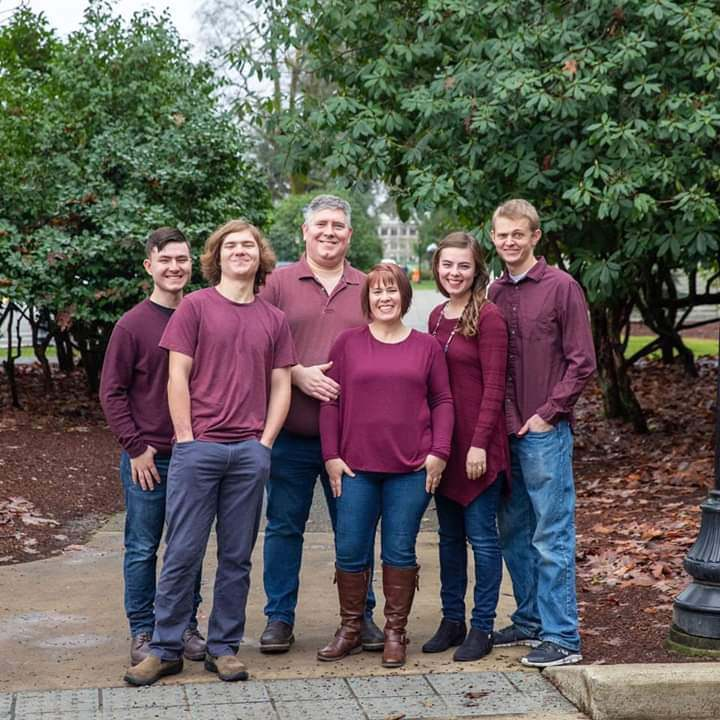

The Chambers are a family built around love and connected by food. Bob and Judy made sure that family dinners where important. Around that table, they taught their children the importance of God and want it means to be a good person. Their children, one of which was my father Scott Chambers, would go on to teach those same principles around different tables with the same food.
